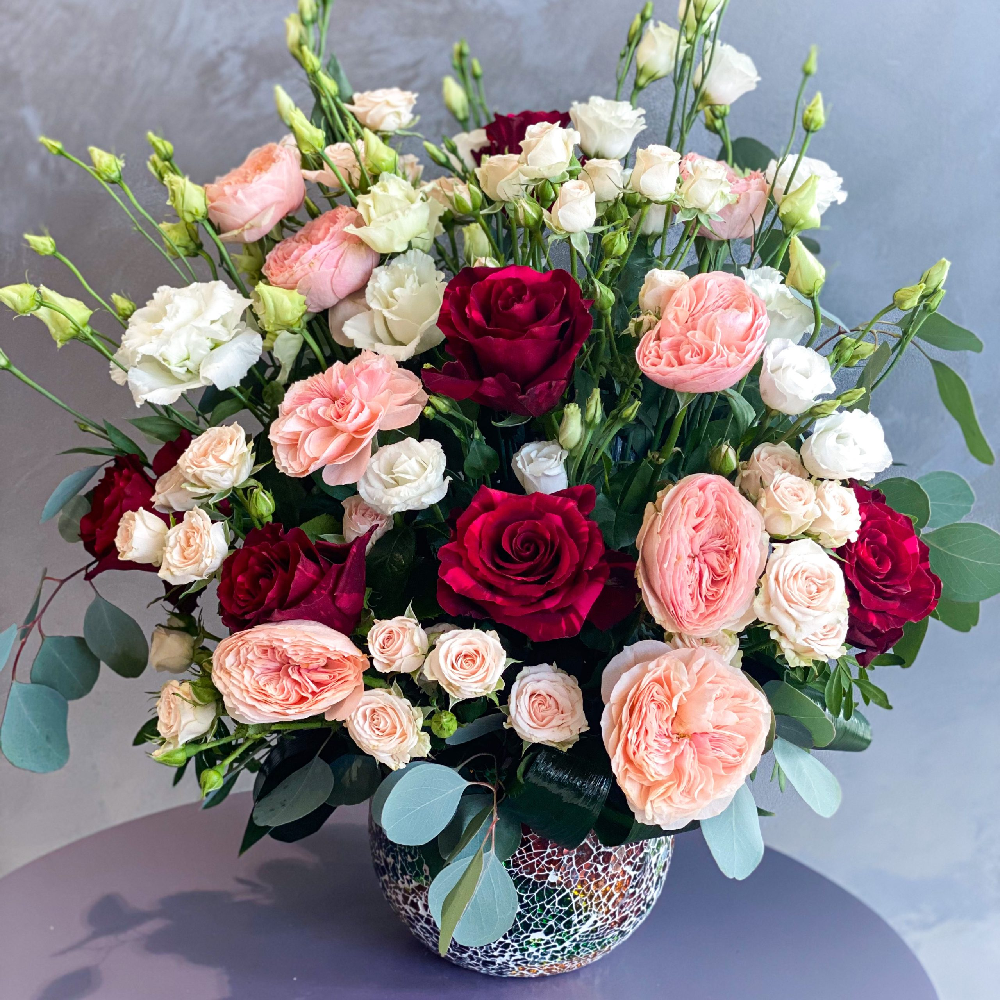

Aranjamentul floral scurt "Bucurie tropicală": Dacă doriți să aduceți o notă exotică și vibrantă în încăperea dvs., acest aranjament floral scurt este alegerea perfectă. Cu orhidee roz și galbene, trandafiri portocalii și verdeață exotică, acest aranjament emană o energie tropicală și bucurie. Plasat într-un vas cu aspect natural sau într-un coș din fibră naturală, acest aranjament aduce o explozie de culori și frumusețe, fiind ideal pentru a decora spații de relaxare sau evenimente speciale.
